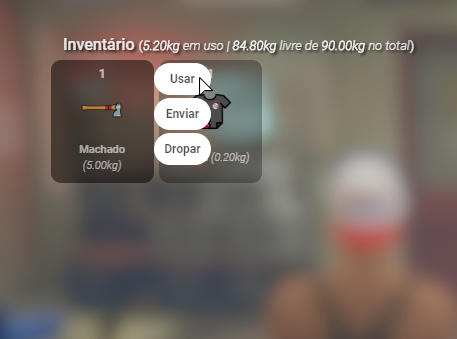
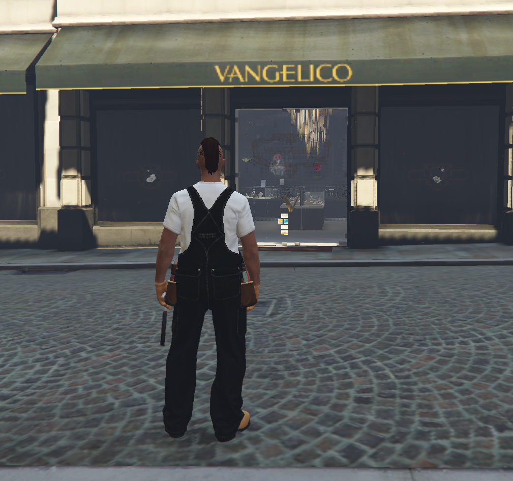
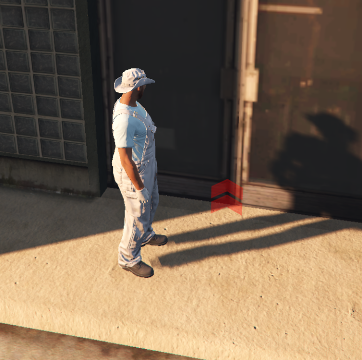
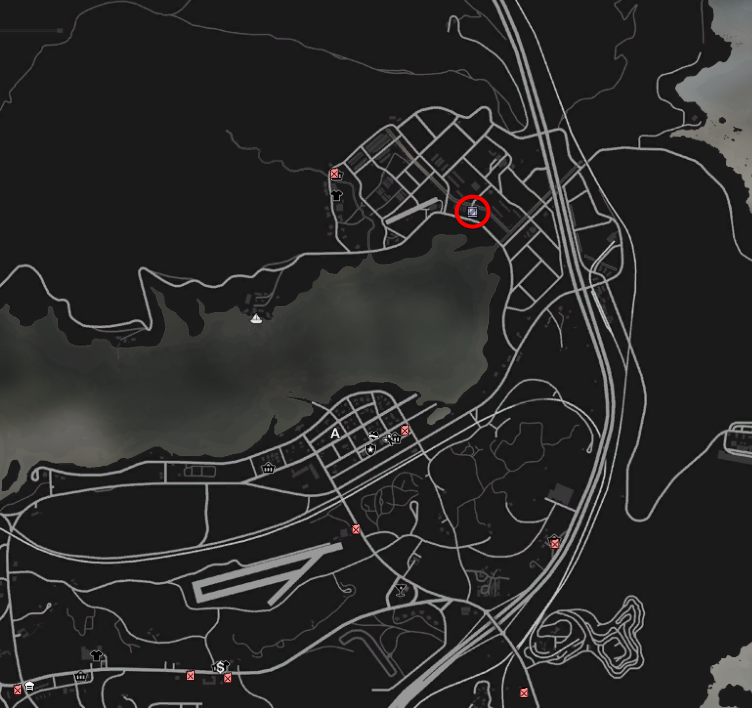
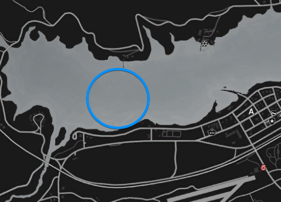

TUTORIAIS
SALÁRIOS
-
Vips
- Vip Prata:
- Vip Ouro: 5000
- Vip Prata: 6000
-
Empregos
- Farm dos mecânicos: 300 a 400 + lucro da tunagem
- Líder dos mecânicos: 5000
- Mecânico: 3000
- Juíza: 7500
- Psicólogo: 5500
- Jornalista: 5000
- Advogado: 7500
- Taxista: 2500
- Streamer: 1000
-
LSPD
- Farm: 400 a 700
- SWAT: 5000
- Cadete: 2700
- Oficial: 3700
- Sargento: 4200
- Tenente: 5700
- Capitão: 7700
- Comandante: 8500
- Chefe de polícia: 10000
-
FBI
- Agente FBI: 5000
- Vice diretor FBI: 8000
- Diretor FBI: 10000
-
EMS
- Farm: 400 a 700
- Paramédico: 3500
- Enfermeiro: 4500
- Médico: 5500
- Vice-diretor: 6500
- Diretor: 7500
-
Salários por UNIDADE VENDIDA
- Lixeiro: 510 a 610
- Motorista: 400 a 800 + bônus
- Amazon: 700 a 1000
- Fruteiro: 600 a 1100
- Assasino: 1000 por orgão
- Leiteiro: 900 a 1400
- Caçador: 450 a 2000
- Lenhador: 1300 a 2300
- Caminhoneiro: 2000 a 3000
TOKOVOIP
Para configurar, inicialmente vá até as configurações de bate-papo dentro do jogo e selecione o "Modo de bate-papo com voz" para "Pressionar para falar" e configure os níveis de entrada e saída de acordo com seu dispositivo, selecionando o dispositivo de áudio de entrada e saída corretamente.
RÁDIO
ROUPAS
-
Roupas masculinas:
- /CHAPEU MASCULINO - https://wiki.rage.mp/index.php?title=Male_Hats
- /OCULOS MASCULINO - https://wiki.rage.mp/index.php?title=Male_Glasses
- /JAQUETA MASCULINO - https://wiki.rage.mp/index.php?title=Male_Tops
- /CALCA MASCULINO - https://wiki.rage.mp/index.php?title=Male_Legs
- /MASCARA MASCULINO - https://wiki.rage.mp/index.php?title=Masks
- /MAOS MASCULINO - https://wiki.rage.mp/index.php?title=Male_Torsos
- /SAPATO MASCULINO - https://wiki.rage.mp/index.php?title=Male_Shoes
- /ACESSORIO MASCULINO - https://wiki.rage.mp/index.php?title=Male_Accessories
-
Roupas femininas:
- /CHAPEU FEMININO - https://wiki.rage.mp/index.php?title=Female_Hats
- /OCULOS FEMININO - https://wiki.rage.mp/index.php?title=Female_Glasses
- /JAQUETA FEMININO - https://wiki.rage.mp/index.php?title=Female_Tops
- /BLUSA FEMININO - https://wiki.rage.mp/index.php?title=Female_Undershirts
- /CALCA FEMININO - https://wiki.rage.mp/index.php?title=Female_Legs
- /MASCARA FEMININO - https://wiki.rage.mp/index.php?title=Masks
- /MAOS FEMININO - https://wiki.rage.mp/index.php?title=Female_Torsos
- /SAPATO FEMININO - https://wiki.rage.mp/index.php?title=Female_Shoes
- /ACESSORIO FEMININO - https://wiki.rage.mp/index.php?title=Female_Accessories
CASAS
Para ver quais casas estão disponíveis para comprar, é só digitar o comando /homes list

Se quiser comprar ou apenas ver o preço de uma casa, chegue perto da porta dela e digite /enter

LENHADOR
Localização da Central dos Lenhadores
Pegue seu veículo nessa marcação vermelha
Vá até uma Loja de Armamentos e compre um Machado
Depois de comprar, equipe o machado
Vá até à floresta no sul de Paleto Bay

Chegue perto de uma árvore, coloque seu machado na mão e aperte o E para cortar a árvore
Repita o processo nas outras árvores. Os blips das árvores cortadas reaparecem depois de algum tempo
Após pegar a madeira, volte para a Central dos Lenhadores e inicie as entregas apertando o E nesse blip
Assim que chegar no local, aperte o E para entregar as madeiras Obs: tem que ir com o veículo até ao local, senão o blip não irá aparecer
O dinheiro vai cair na conta e um novo local vai ser designado
Para sair de serviço, é só apertar o F7
LIXEIRO
Localização da Central do Lixeiro
Comece a coleta do lixo apertando E nessa marcação aqui
Pegue o seu caminhão nessa marcação vermelha
Vá até às marcações amarelas para coletar o lixo
Quando chegar no local, aperte o E para coletar o lixo
Quando ficar sem espaço na mochila, volte para a Central para despejar o lixo e receber o seu dinheiro
MINEIRADOR
Localização da Central de Mineradores
Pegue o seu caminhão nessa marcação vermelha
Com o caminhão, vá até à pedreira (marcado no mapa em baixo)
Para começar a minerar, vá até à pedra com a marcação vermelha e aperte o E
Quando a animação terminar, você irá receber um minério e uma nova marcação vai aparecer em uma pedra aleatória na pedreira
Quando quiser parar de minerar, só ir na Central e derreter os minérios
Depois de forjar todos os minérios, você pode vender eles na joalheria marcada no mapa
FAZENDEIRO
Localização da Central de Fazendeiro
Pegue seu trator nessa marcação vermelha perto de um celeiro
Vá até a essa porta e aperte o E para iniciar a colheita
Passe com o trator nos blips vermelhos. A cada blip você irá receber grãos. Aperte F7 para parar a colheita quando tiver com o inventário cheio
Passe com o trator nos blips vermelhos. A cada blip você irá receber grãos. Aperte F7 para parar a colheita quando tiver com o inventário cheio
Vá com a caminhonete até ao processamento dos grãos
Processe seus grãos apertando o E nesse blip
Depois de separar os grãos, vá até à venda para vender os grãos
AMAZON
Localização da Central Amazon
Aqui você começa as entregas
Aqui você empacota em entregas
Aqui você pega os veiculos, a van carrega menos peso e o caminhao bau carrega mais encomendas
Você pode guardar as encomendas nos veiculos de entrega para entregar mais por vez, lembrando que para entregar devem estar no seu inventario!
Chegando no local marcado é só apertar 'E' e continuar as entregas
PARA ENTREGAS MAIORES FORA DA CIDADE:
Aqui você pega o caminhão
Aqui você pega a carga e escolhe a localidade
Apos pegar a carga com o caminhão voce deve digitar '/pack encomenda' dentro dele!
Chegando no local marcado voce deve estacionar a carga em cima do blip vermelho, ir ao lado da carta e apertar 'E'
LEITEIRO
Localização da Central de Leiteiros
Pegue sua van na marcação vermelha
Vá a uma Loja de Departamentos e compre Garrafas VaziasUtilidades > Comprar > Garrafa Vazia
Vá até às vacas com a van na cidade em cima de Sandy Shores, marcado no mapa
Chegue perto de uma vaca e aperte o E para ordenhar ela
Ordenhe a vaca até ficar sem garrafas vazias
Depois de encher todas as garrafas, vá até à Central para começar a entrega do leite
Assim que chegar no local, aperte o G para entregar o leiteObs: tem que ir com a van até ao local, senão o blip não irá aparecer
O dinheiro vai cair na conta e um novo local vai ser designado
Para sair de serviço, é só apertar o F7
FRUTEIRO
Localização da Central de Fruteiro
Para pegar as laranjas, você deve colher elas nas árvores do lado da Central

Quando tiver com laranjas suficientes, pode iniciar as entregas apertando o E nesse blip
Pegue o veículo para poder fazer as entregas
Quando chegar no local, aperte o E em cima do blip
Para sair de serviço, é só apertar o F7
CAÇADOR
Localização da Central de Caçadores
OPCIONAL: Compre sua Licença de Caça no blip vermelho
A licença custa $50.000 dólares. Caso não compre a licença, você estará ilegalmente na profissão e a polícia poderá te prender caso você seja abordado. O dinheiro das carnes será dado em dinheiro limpo se tiver a licença, caso contrário, o dinheiro virá em dinheiro sujo
Vá até a uma Loja de Armamentos e compre uma Winchester 22, as munições necessárias e alguma ferramenta de corte (faca, machado, etc)
Para iniciar a caça, vá até à casa na floresta e aperte o E no blip dentro da casa
Para sair de serviço, é só apertar o F7
PESCADOR
Compre Iscas em qualquer Loja de Departamento, Utilidades > Comprar > Isca
Vá ao Mar Alamo até ao porto de embarcações
Vá com o barco até à área marcada para poder pescar
Assim que chegar na área, ancore o seu barco com o comando /ancorar, saia do volante e aperte o E para começar a pescar
Agora é só aguardar alguns segundos, apertar E de novo e repetir até ficar sem iscas
Quando terminar de pescar, aperte o F6 para parar a animação, digitar /ancorar e volte para o porto para poder guardar o barco
No pier de Santa Monica você pode vender os peixes que você pescou
MOTORISTA
Localização da Primeira Central dos Motoristas
Na porta vermelha, você consegue spawnar os ônibus Na porta verde, você consegue começar o seu serviço

Depois é só ir nos blips amarelos

Quando estiver com o ônibus em cima de um blip, é só buzinar que ele passa para a próxima parada de ônibus A cada parada você recebe dinheiro
Aí é só ir fazendo a rota até você quiser parar. Para sair de serviço, é só apertar no F7 Em Paleto Bay, tem uma outra Central com uma rota diferente